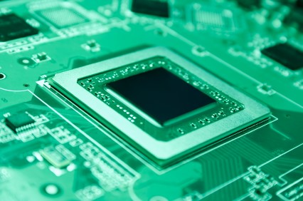
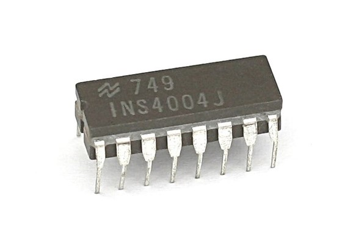
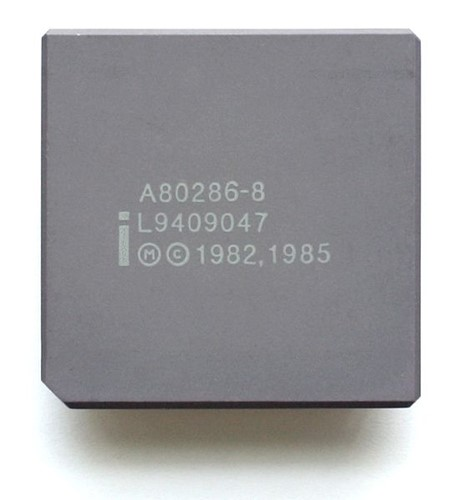
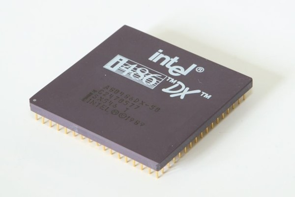
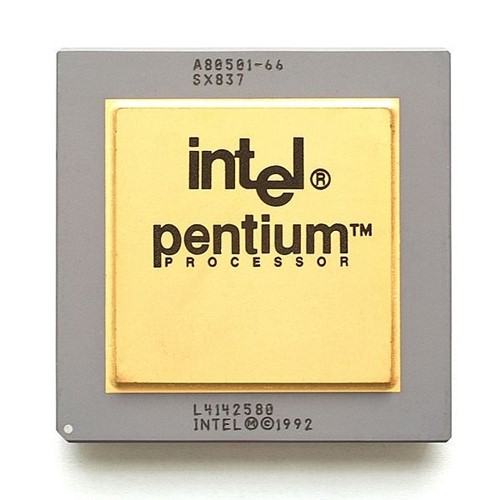
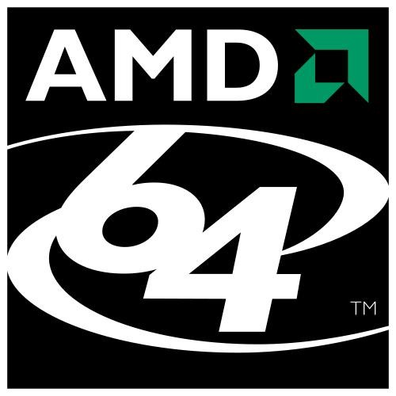
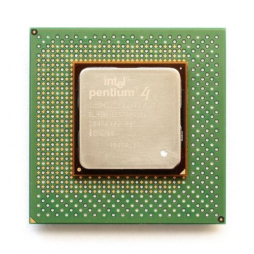
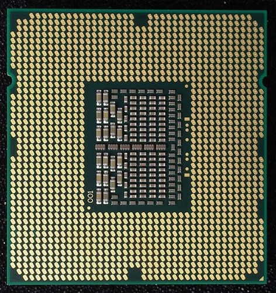
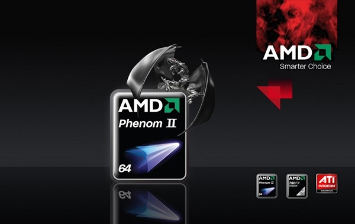

O processador, também conhecido como CPU, é peça fundamental dos computadores. E não estamos falando apenas dos famosos PCs. Celulares, video games, smartphones, tablets: todos esses dispositivos precisam de processadores para funcionar. Esse componente tão vital é responsável por carregar e realizar as operações aritméticas e lógicas de que os programas de computador fazem uso. Portanto, nada funciona sem a famosa CPU.
Levou décadas para que chegássemos aos modelos atuais de processadores. Na verdade, demoramos alguns anos para chegar também à ideia que temos hoje de como uma CPU funciona. Antes, os softwares não eram compatíveis com todos os modelos de computador, já que eles eram desenvolvidos especificamente para cada máquina.
Isso estava relacionado ao fato de que cada computador era como uma plataforma diferente. Muitas vezes, existia incompatibilidade até mesmo entre modelos de um mesmo fabricante. Por incrível que pareça, isso não chegava a ser uma barreira preocupante, visto que a produção de software ainda não era alta e não existiam muitos programas disponíveis.
Precursores da CPU moderna: anos 40, 50 e 60
 Painéis do ENIAC em exposição na Universidade da Pensilvânia (Fonte da imagem: Wikimedia Commons)
Painéis do ENIAC em exposição na Universidade da Pensilvânia (Fonte da imagem: Wikimedia Commons)
Os primeiros computadores, anteriores à década de 50, possuíam um diferencial considerável, se comparados com as máquinas de hoje: eles não eram capazes de armazenar programas. Alguns deles, como o ENIAC, que teve seu desenvolvimento iniciado em 1943, tinham inicialmente o plano de armazenamento de softwares em seu interior. Mas, para agilizar o lançamento da máquina, essa ideia acabou ficando para trás.
Dessa forma, o ENIAC tinha que ser modificado fisicamente cada vez que uma tarefa diferente fosse executada. Cabos deveriam ser reposicionados, chaves ligadas ou desligadas e um novo programa ser carregado. Era dessa forma que o processamento em si era realizado.
EDVAC instalado no Laboratório de Pesquisas Balísticas dos EUA
Em 1945, a ideia de uma unidade central de processamento capaz de executar diversas tarefas foi publicada por John Von Neumann. Chamado de EDVAC, o projeto desse computador foi finalizado em 1949. Essa é a origem dos primeiros modelos “primitivos” de processadores da forma como os conhecemos. Além disso, o EDVAC e outros computadores, como o Mark I, da Universidade de Harvard, marcam o início da era dos computadores modernos, capazes de armazenar programas.
Durante a década de 50, a organização interna dos computadores começou a ser repensada. Esse foi o momento em que os processadores começaram a ganhar funcionalidades básicas, como registradores de índices, operandos imediatos e detecção de operadores inválidos.
No início da década de 60, a IBM desenvolveu uma nova abordagem: planejou uma família de computadores que poderiam executar o mesmo software, com poder de processamento e preços diferentes. Com isso, os programas não seriam mais dependentes de máquina, mas compatíveis entre todos esses modelos.
Para colocar isso em prática, a IBM acabou criando um computador virtual conhecido como System/360, ou simplesmente S/360. Podemos pensar nesse sistema como um conjunto de instruções e capacidades que todos os computadores da família S/360 teriam em comum.
Processadores Modernos
Nos modelos apresentados acima, os processadores ainda não eram compostos por uma unidade central, mas por módulos interconectados entre si. Foi só no início da década de 70 que surgiram as CPUs desenvolvidas totalmente em circuitos integrados e em um único chip de silício.
Geração Pré-x86
Intel 4004 foi o primeiro microprocessador da história (Fonte da imagem: Wikimedia Commons)
O Intel 4004 foi o primeiro microprocessador a ser lançado, em 1971. Sendo desenvolvido para o uso em calculadoras, essa CPU operava com o clock máximo de 740 KHz e podia calcular até 92 mil instruções por segundo, ou seja, cada instrução gastava cerca de 11 microssegundos.
Com o sucesso do 4004, a Intel desenvolveu o processador 8008, em 1972. Esse era uma CPU de 8 bits, com barramento externo de 14 bits e capaz de endereçar 16 KB de memória. Seu clock trabalhava na frequência máxima de 0,8 MHz.
Esse modelo foi substituído, em 1974, pelo Intel 8080, que apesar de ainda ser um processador de 8 bits, podia executar, com algumas limitações, operações de 16 bits. O 8080 foi desenvolvido, originalmente, para controlar mísseis guiados. Tinha clock limite de 2 MHz, um valor muito alto para a época, era capaz de realizar centenas de milhares de operações por segundo e de endereçar até 64 KB de memória.
A família x86 de 16 bits
A arquitetura x86, lançada em meados da década de 70, ainda serve como base para boa parte dos computadores atuais. O primeiro processador que aproveitou todo o seu potencial foi o Intel 8086, de 1978. Pela primeira vez, a velocidade do clock alcançava 5 MHz, utilizando instruções reais de 16 bits. O nome "x86" veio do fato de que o nome dos processadores que vieram depois do Intel 8086 também terminavam em "86".
Ainda no mesmo ano, foi lançado o 8088, sucessor que possuía barramento externo de 8 bits, porém, com registradores de 16 bits e faixa de endereçamento de 1 MB, como no 8086. Esse foi o chip utilizado no IBM PC original.
Microprocessador Intel 80286 de 8 MHz (Fonte da imagem: Wikimedia Commons)
Nos anos seguintes, a Intel desenvolveu os modelos 80186 e 80188, criados para serem usados com sistemas embarcados. Em 1982, a capacidade de processamento chegou ao patamar de 6 e 8 MHz, com o Intel 80286. Posteriormente, as empresas AMD e Harris Corporation conseguiram romper essa barreira, chegando a 25 MHz.
Entram as CPUs de 32 bits (x86-32)
Como o nome sugere, a x86-32 é arquitetura x86 de 32 bits, utilizada até hoje em muitos computadores. Grosso modo, podemos dizer que, com exceção de processadores de 64 bits e aqueles de arquitetura ARM, todos os outros existentes ainda hoje são herdeiros das características dessa geração.
Os famosos 386 e 486
As CPUs 80386 e 80486, lançadas entre o meio e o fim da década de 80, trabalhavam com clocks que iam de 33 MHz a 100 MHz, respectivamente. O 80386 permitiu que vários programas utilizassem o processador de forma cooperativa, através do escalonamento de tarefas. Já o 80486 foi o primeiro a usar o mecanismo de pipeline, permitindo que mais de uma instrução fossem executadas ao mesmo tempo.
Processador 486 DX, mais rápido se comparado com a versão SX (Fonte da imagem: Wikimedia Commons)
Para o 80486, existiram diversas versões, sendo que cada uma delas possuía pequenas diferenças entre si. O 486DX, por exemplo, era o top de linha da época e também a primeira CPU a ter coprocessador matemático. Já o 486SX era uma versão de baixo custo do 486DX, porém, sem esse coprocessador, o que resultava em um desempenho menor.
A guerra entre Intel e AMD
As séries de processadores Intel e AMD marcaram época no mundo da informática, através de suas diferentes versões. O primeiro Pentium (Intel), lançado em 1993, apresentava várias melhorias sobre o 80486, principalmente por uso da superescalabilidade, ou seja, a replicação de hardware para que mais instruções fossem executadas ao mesmo tempo. Seu clock inicial era de 100 MHz, o qual chegou a atingir 200 MHz com o passar do tempo de desenvolvimento.
Processador Intel Pentium A80501, de 66 MHz (Fonte da imagem: Wikimedia Commons)
Em 1995, a Intel lançava o Pentium Pro, sexta geração de chips x86 e que possuía uma série de melhoramentos em relação ao seu antecessor. Essa seria a base para os futuros lançamentos: Pentium II, Pentium III e Pentium M.
Paralelamente, a AMD começava a ganhar mercado com modelos similares, principalmente como o AMD K5, forte concorrente do Pentium original. Dois anos depois, o Pentium II foi lançado, atingindo o clock de 450 MHz.
Nessa mesma época, a AMD desenvolveu CPUs que batiam de frente com a Intel, como o AMD K6. Por esse motivo, ambas as empresas travaram uma espécie de “corrida”, competindo para ver quem conseguia o maior desempenho e valor de clock.
A lei de Moore
Em 1965, Gordon Moore, um dos fundadores da Intel, afirmou que o número de transistores em um chip dobraria, sem custo adicional, a cada 18 meses. Tal afirmação ficou conhecida como a Lei de Moore, a qual foi válida durante anos, principalmente no final da década de 90.
Sempre que uma empresa lançava um modelo de processador, o concorrente a superava meses depois. Isso ficou muito evidente nos anos de 1999 e 2000, quando o Pentium III e o AMD Atlhon (K7) estavam guerreando pelo maior clock. Por um período de tempo, a AMD liderou a disputa, pois o Atlhon, que trabalhava com frequências maiores do que 1 GHz, superou o Pentium III.
A reviravolta da Intel veio com o lançamento do Pentium 4, em 2001, que trabalhava com até 2 GHz e levou a empresa de volta ao topo do mercado. As versões de baixo custo dessas CPUs, Celeron (Intel) e Duron (AMD), também disputavam fortemente o lugar mais alto no ranking do processador “B” mais vendido.
Multicore: o fim da lei de Moore
Conforme a tecnologia dos processadores foi progredindo, o tamanho de seus transistores foi diminuindo de forma significativa. Contudo, após o lançamento do Pentium 4, eles já estavam tão pequenos (0,13 micrômetros) e numerosos (120 milhões) que se tornou muito difícil aumentar o clock por limitações físicas, principalmente pelo superaquecimento gerado.
A principal solução para esse problema veio com o uso de mais de um núcleo ao mesmo tempo, através da tecnologia multicore. Assim, cada núcleo não precisa trabalhar numa frequência tão alta. Se o esquema de escalonamento de tarefas funcionasse de maneira eficiente, seria possível trabalhar com quase o dobro do clock. Um processador dual-core de 1,5 GHz, por exemplo, poderia ter um desempenho semelhante a uma CPU de núcleo único de 3 GHz.
Um componente chamado de escalonador determina em qual dos núcleos uma tarefa deve ser executada. Mas como o escalonador demora certo tempo para fazer essa decisão, na prática fica quase impossível atingir o dobro exato de desempenho. Portanto, com o advento do processador multicore, a lei de Moore tornou-se inválida, visto que já não era mais possível aumentar a frequência do processador como antes.
Anos 2000: a era de 64 bits
No começo dessa década, ficou claro que o uso de 32 bits não seria mais eficiente, visto que, no máximo, apenas 4 GB de memória RAM poderiam ser endereçados nessa plataforma. Logo, a solução mais natural foi o desenvolvimento de novas arquiteturas que passassem a trabalhar com 64 bits ao invés de 32.
O AMD Opteron, de abril de 2003, foi a primeira CPU de 64 bits da empresa (Fonte da imagem: AMD)
Tanto a AMD quanto a Intel trabalhavam em seus próprios projetos de CPUs de 64 bits, mas quem venceu a disputa foi mesmo a AMD, com o x86-64, que mais tarde foi renomeado para AMD64. Isso aconteceu, principalmente, pelo fato de a AMD ter evoluído diretamente o x86-32, enquanto que a Intel tentou criar algo novo, do zero.
Visto esse acontecimento, as empresas em questão criaram um acordo no uso dessas arquiteturas, no qual a AMD licenciou para a Intel o uso do x86-64. Por outro lado, a Intel também tornou legal o uso da arquitetura x86-32 pela AMD. Logo, todos os modelos de processadores 64 bits comerciais atuais rodam sobre o x86-64. O AMD Athlon 64 foi um dos maiores representantes dessa arquitetura.
Blackfin
Ainda em 2000, uma nova arquitetura de processadores foi lançada pela empresa Analog Devices. A Blackfin, como foi batizada, é uma família de microprocessadores de 16 e 32 bits que possuía, como diferencial, um processador de sinal digital (DSP) embutido, usado para processar áudio e vídeo.
Aliado a outras características de design, esse processador permite um consumo menor de energia aliado ao alto desempenho. O uCLinux é um dos sistemas operacionais que suporta esse tipo de CPU.
Pentium 4 e Pentium D
Em 2002, a Intel lançou o Pentium 4, processador que podia alcançar clocks muito altos, chegando até a 3,8 GHz em condições especiais. Os últimos modelos dessa linha também incluíam a tecnologia Hyperthreading (HT), funcionalidade que fazia um processador físico trabalhar como se fossem duas CPUs lógicas.
Intel Pentium 4 Willamette para Socket 423 (Fonte da imagem: Wikimedia Commons)
Posteriormente, o Pentium 4 foi substituído pelo Pentium D, duas linhas de processadores dual-core de 64 bits. Mais tarde, foi lançado o Pentium Extreme Edition, que possuía desempenho um pouco melhor do que o Pentium D, além de tecnologias extras que o tornavam mais apto para tarefas pesadas. Esse modelo também fazia uso da tecnologia HT, podendo simular a existência de até quatro núcleos.
Outra novidade da Intel foi o Pentium M, uma versão de baixo consumo do Pentium Pro desenvolvido para dispositivos móveis. Esse processador foi lançado em 2003. Em 2005, a AMD apresentou ao mundo o seu primeiro processador dual-core, o Athlon 64 X2.
Intel Core
Em 2006, a Intel inicia a sua linha Core, para consumidores que precisam de mais poder de processamento. Faz parte dessa linha o modelo Core 2 Duo, que demonstra uma capacidade incrível se comparado com os dual-core anteriores da empresa. Na mesma época, foi lançada a versão Pentium Dual Core, que apesar de trazer uma boa relação custo-benefício, se mostra inferior ao Core 2 Duo.
Outro grande lançamento feito pela Intel foi o Core 2 Quad, processadores com quatro núcleos e que, apesar de demonstrarem alto desempenho, acabam perdendo em algumas tarefas para o Core 2 Duo. Uma versão posterior, nomeada Core 2 Extreme Quad Core, também foi lançada, proporcionando mais velocidade de clock, que pode chegar até 3,2 GHz.
Em 2010, a Intel anunciou os modelos Core i3, i5 e i7. Quem ainda não conhece pode conferir o artigo publicado pelo Tecmundo sobre as diferenças entre esses três modelos.
Base do processador Intel core i7-940 (Fonte da imagem: Wikimedia Commons)
Além disso,a empresa também lançou uma segunda geração desses processadores, que vem sendo muito bem aceita pelos consumidores. Essa nova leva possui mudanças na memória cache, melhorias no modo Turbo Boost e aperfeiçoamentos na própria arquitetura. Porém, o que chama a atenção é a presença de um chip gráfico acoplado com o processador principal (APU). Confira as diferenças entre as duas gerações no artigo de Fábio Jordão.
A empresa também vem trabalhando em uma nova microarquitetura de processadores, a Ivy Bridge, que deve possuir suporte para PCI Express 3.0, DirectX 11 e OpenCL 1.1. A empresa espera obter um aumento de até 30% de desempenho no processamento gráfico se comparado com o chipset Sandy Bridge, presente nos processadores i5 e i7.
As últimas novidades da AMD
Quando o assunto é AMD, a história possui algumas diferenças. Depois dos processadores dual-core, a linha Athlon II apresentou processadores de três (X3) e quatro núcleos (x4), todos com versões econômicas, ou seja, com menor desempenho e mais baratos.
Um dos últimos grandes lançamentos da AMD foi o Athlon Neo, chip desenvolvido para notebooks ultrafinos e que precisam de uma duração maior da bateria. Outra linha apresentada pela fabricante foi a dos processadores Sempron, uma versão simplificada do Athlon, com apenas um núcleo e voltada para consumidores menos exigentes.
AMD Phenon II possui modelos de 3 e 3,1 GHZ (Fonte da imagem: AMD)
Quem não dispensa um bom jogo ou precisa de processamento de alto desempenho pode contar com os processadores Phenom, que foram lançados para competirem de igual para igual com as CPUs da Intel. Esses modelos também receberam versão de três (X3) e quatro (X4) núcleos. A segunda geração dessa linha, Phenom II, conta também com processadores dual-core de 3 e 3,1 GHz.
A surpresa mesmo fica por conta dos processadores Phenom II X4, de quatro núcleos e alto desempenho, com modelos de até 3,4 GHz. Além desses, servidores ou estações de trabalho que exigem uma carga maior de processamento também podem se beneficiar dos processadores Opteron, que podem operar com até seis núcleos.
A AMD também lançou uma linha de CPUs para notebooks que, apesar de ser dual-core, possui um consumo eficiente de energia, poupando assim a carga da bateria dos portáteis. Mas o que vem ganhando espaço é mesmo a Fusion, linha de APUs (Unidade de Processamento Acelerada) da AMD. Com a junção de CPU e GPU em um único chip, é possível obter melhor desempenho a um custo reduzido. Leia mais sobre o Fusion aqui mesmo, no Tecmundo.
...
Com tantos modelos de processadores disponíveis, pode ter ficado confuso saber quais modelos ainda são vendidos e o que comprar na hora de fazer um upgrade. Mas não se preocupe: aqui você encontra artigos que podem ajudá-lo a decidir qual é o processador ideal para você, seja Intel ou AMD.